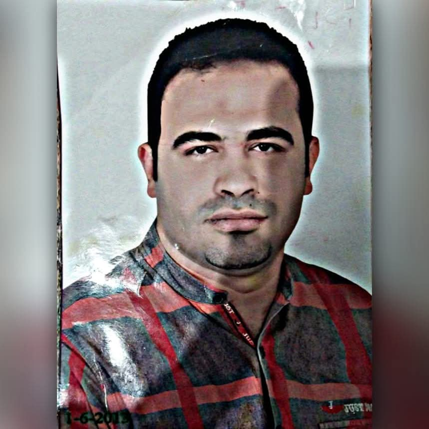

على روح المرحوم
أحمد بكر ياسين
اللهم اغفر له وارحمه، وأسكنه فسيح جناتك.
سورة يس
بصوت عبدالرحمن مسعد
0:00
0:00
استمع إلى سورة يس

على روح المرحوم
اللهم اغفر له وارحمه، وأسكنه فسيح جناتك.
بصوت عبدالرحمن مسعد
استمع إلى سورة يس